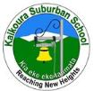

Duration: 2 hours
Location: Chrsitchurch Port Hills
Team Next Generation are hosting a new series of rogaine adventures this summer, commencing Wednesday 27th January. Each event will be of two hours duration, from 6:30 - 8:30pm. For more detail see Canterbury Rogaine.
Duration: 4 & 8 hours
Location: Whareroa Farm near Paekakariki
The 2016 Ak Attack will start at Whareroa Farm near Paekakariki, with controls between Orange Hut and the Kapiti Coast. Its mostly the rugged Akatarawa native forest that is the feature of the event, and 8hr teams will have to handle it. But there are enough easy parts for slower 4hr teams.
This is a crossover rogaine, with bikers able to dump their bikes and walk, and it could be that smart rogainers might outwit them entirely on foot. Controls will be sited with bikes in mind, and many of the tracks are riding beautifully at the moment. But there are some foot-only areas on the farm, and other tracks will be faster on foot. Those who can match the track/contour information from the map with their own abilities will choose the best routes.
Since the last Ak Attack on this side of the forest we have mapped heaps of tracks in what we call "The Cousins" (following The Three Sisters, The Seven Brothers, and The Sister-In-Law!) So it will be a new biking challenge, The area is similar to the 2014 Big Trig (foot) rogaine, but we think footies will be just as challenged trying to beat the riders!!
For more detail see akattack.org.nz/ or download the informational flyer.
Duration: 90 minutes
Location: Rotorua
Each year Orienteering BOP runs the MTB Adventure Quest, which is part of the Rotorua Bike Festival. This is a great event to do with family or friends, and is heaps of fun! It's like an Amazing Race on a bike where you try to find as many checkpoints as you can in 90 minutes, and complete mystery activities along the way for bonus points. Suitable for all ages and abilities. There is an optional dress-up competition, and category and spot prizes up for grabs. This year as part of your entry fee you will also get a free dinner voucher for the Rotorua Night Market to use as you wish after the event. Entries are now open and you can find out all the information on our website.
Duration: 90 minutes
Location: Massey University Palmerston North
Fundraising for Massey Child Care Centre's outside environments. Teams of 2 or 3 adults - registration - $25 a team before 19th February and $30 cash on the day. Registrations open up at 9.15am and the first 10 teams are away by 9.45am. The time frame given is 90 minutes. Bring a pen or two, a water bottle and money for the cake stall, coffee stand and sausage sizzle! Enjoy the Massey campus and surroundings. See Orienteering NZ Rogaine Calendar.
Duration: 24 hrs with supporting events (to be advised)
Location: Inland from Palmerston and Waikouaiti
We shall use land that includes the areas used for "The Golden Road" and "Never Look Back". It is open farmland and tussock country with woodlots and some pine plantation. It is cut by deeply incised valleys with gorges and some scrub-filled gullies. There are old volcanic cones (basalt) along with schist country and numerous rock outcrops. From the tops there are stunning views up the east coast of the South Island and inland. Avoiding excessive height gain and loss will be the key to good planning.
This event will be suitable for everyone not just experienced rogainers. There will be shorter non championship events or you can test yourself over the full 24 hours. However you do not need to stay out for all of that time. You may make multiple trips back to the "hash house" where hot food will await you.
See the event website.
Duration: TBA
Location: Springfield, Canterbury
Details to be advised. See Orienteering NZ Rogaine Calendar.
Duration: TBA
Location: New Plymouth, Taranaki
This is a schools based event open to all Secondary School students in Taranaki. More information will be sent to your school sports co-ordinators. See Orienteering NZ Rogaine Calendar.
Duration: 1 hour
Location: Wellington
For details see Orienteering NZ Rogaine Calendar.
Duration: 2 hours
Location: Taranaki
Relieve the drudgery of a week of work by breaking it up. See Orienteering NZ Rogaine Calendar.
Duration: 90 minutes
Location: Rotorua
For anyone who enjoys rogaines and likes MTBing! The Summer Rotorua MTBO Rogaine Series will consist of a series of three 90 minute rogaines. The series will be launched with the first event on during the Rotorua Bike Festival. Fun, friendly and you can take it as seriously as you like. You can do it individually or as a team. Spare mapboards available for newcomers and a sausage sizzle afterwards. Check out our website for all the info. You can pre-enter or simply turn up on the day - registration from 8.30am at main Waipa MTBO Car Park, Rotorua.
Duration: 3 & 6 hrs
Location: Inland Road (North Canterbury)

The Home and School Group of Kaikoura Suburban School and hosting farming families are delighted to bring you this rogaine as a fund raiser for the school. Inland Road is between Mt Lyford (via Waiau) and Kaikoura, North Canterbury - a 2.5 hour drive from Christchurch and 2hrs from Blenheim. Basic camping is available on-site Friday and Saturday nights, or make a full weekend of it by staying at Hanmer, Waiau, Mt Lyford or Kaikoura. The terrain is rolling land and hills with a typical elevation range of 400m, more if you wish. Vegetation is a mix of open grassland and scrub. Expect stunning landscapes. Download the info sheet or check out the facebook page. Entries open Friday 12th February on the NZRA website.Duration: TBA
Location: Christchurch Port Hills
The wicked team at HotTeams announce the autumn rogaine series for 2016. See Wicked Rogaines website for further information as it becomes available or check out the facebook page.
Duration: 1.5 & 3 hrs
Location: Newmarket Campus
University Metrogaine was created to link the 3 University Campuses - City Campus, Grafton and Newmarket. Metrogaining is a sport of urban cross-country navigation, involving both route planning and navigating between check points. Teams of 4 will be given a map and challenged to get around as many checkpoints as they can within their given time limits. Features of this event are teamwork, endurance, competition and appreciation for the University environment. The event is open to both students and staff with 90 minute and 3 hour options available. Participants will be encouraged to represent their faculty, hall or student group and dress up to bring a fun element to the event. Teams will send their answers at each checkpoint by text message and progress will be electronically tracked. See the website for more infomation or check out facebook.
Duration: 2 or 3 hour
Location: Auckland
Lactic Turkey Events together with the Auckland Council would like to invite you to participate in the 2016 SCHOOLS SUSTAINABILITY CHALLENGE SERIES. Each race is for teams of 4 students who will compete in a 2 or 3 hour event, which includes a mix of running/walking, navigation and sustainability based activities. Teams will navigate to as many checkpoints as they can, collecting points for each checkpoint visited. To earn extra points teams can complete sustainability themed activities which will require some research and teamwork. Examples of activities could be to identify native bird calls, match a pest to the correct trap used or make something from flax. For further details see Orienteering NZ Rogaine Calendar.
Duration: 3 & 6 hrs
Location: Waihi Station (South Canterbury)
GRAM is back! Geraldine High School PTA have set a date for the next Geraldine Rogaine Autumn Muster. The event is returning to Waihi Station (South Canterbury), with the three-hour event on the scenic hills and gullies of the farm, and the six-hour event extending onto some brand-new country with runnable Douglas fir forest. Event centre (Woodbury Hall), food (GHS PTA) and planning (Mike Harding/Stuart Payne) will be the same as previous years' successful events. Put it in your diary! See the Geraldine High School website for more infomation.
Duration: 3 hrs + 3 hrs
Location: Whangamata
Rogaining with a twist. MTB in the morning, on foot in the afternoon. You can enter one event or enter both and compete for the overall title. 1:25 000 orienteering map.
See the Whangamata Events website for more infomation.
Duration: 3 hrs
Location: Puaha Valley, Little River
Organised by Carol Fowler & Stuart Payne on behalf of the Little River Pony Club in collaboration with the NZ Rogaining Association. More details at: horserogaine.blogspot.co.nz.
Duration: 12, 6 & 3 hrs
Location: Earnscleugh Station, Alexandra
This event will be our normal format, 12hr, 6hr and 3hr. There will also be a mountain bike rogaine included in the 6 hour event. Earnscleugh Station is an iconic high country station in Central Otago flat, rolling and mountain country. mostly open tussock country but also some quite thick Kanuka Forrest and some steep gullies. Entries open at Highland Events website.
Duration: TBA
Location: New Plymouth
A foot only rogaine on our magnificent Mangamahoe map visiting some of the locations used for the NZ MTBO champs in January, and maybe even the Taranaki Secondary Schools Rogaine Champs. A terrific opportunity to pit yourselves against our (semi) forest map. For further details see Orienteering NZ Rogaine Calendar.
Duration: TBA
Location: Wellington, Hutt Valley
The rogaine you do sitting down. 3 or 6hr navigational challenge where you can use public transport. And wear a jazzy adventure racing bib. Or dress-up of your own choosing. Smart txt scoring with live updates. Totally cool. See citysafari.org.nz.
Duration: 3hr & 6hr
Location: Napier, Hawkes Bay
The second Tutira Rogaine and Hawke's Bay Secondary School Rogaine is being held. The Rogaine is being organised by the Tutira School PTA and is being supported by Hawkes Bay Orienteering Club. See Tutira Rogaine for more details.
Duration: 24hr split into five legs
Location: TBA
Twalk started all the way back in 1967, (making this the the 50th, but the 49th anniversary, weird huh). It's going to be a hoot!. TWALK is a twenty-four hour orienteering event. Each leg has around 10 - 20 controls, which will be hidden on features marked on the map and described by a cryptic clue. The first leg is compulsory, as it leads from where you are dropped off to the Hash House. From there, competitors may choose to participate in as many or few legs as they choose, leaving when they like (there is a compulsory 30 minute break between legs). Legs two - five form loops which end up back at the Hash House, and can be cut short if required.
See the website for details.
Duration: 90mins or 3hrs
Location: Kawakawa Bay, Counties Manukau
A navigational challenge in the hills behind Kawakawa Bay. Start time at 10.00am. Registration from 9.30am. . See Counties Manakau Orienteering.
Duration: 2 or 3 hour
Location: Auckland
Lactic Turkey Events together with the Auckland Council would like to invite you to participate in the 2016 SCHOOLS SUSTAINABILITY CHALLENGE SERIES. Each race is for teams of 4 students who will compete in a 2 or 3 hour event, which includes a mix of running/walking, navigation and sustainability based activities. Teams will navigate to as many checkpoints as they can, collecting points for each checkpoint visited. To earn extra points teams can complete sustainability themed activities which will require some research and teamwork. Examples of activities could be to identify native bird calls, match a pest to the correct trap used or make something from flax. For further details see Schools Sustainability Challenge.
Duration: 3hrs Junior or 4hrs Senior
Location: Canterbury Port Hills
The New Zealand Secondary Schools Rogaine will be held on the Port Hills south of Christchurch. The Ports Hills are a favourite playground for the people of Christchurch as they are right on the town boundary with legendary views across the Plains and into Lyttelton Harbour. Details on the website.
Duration: 3 & hrs
Location: Canterbury Port Hills
Following the New Zealand secondary School Championships, PAPO are running a rogaine for the general public that will use the same controls and start at 12:15pm.
 Note new start time for the public event. Parking for this event will be at the Sign of the Takahe. The Rogaine will finish in Victoria Park (where the Schools finish earlier in the day). Further details at: nzssrogaine2016.weebly.com/open-event.html.
Note new start time for the public event. Parking for this event will be at the Sign of the Takahe. The Rogaine will finish in Victoria Park (where the Schools finish earlier in the day). Further details at: nzssrogaine2016.weebly.com/open-event.html.
Duration: TBA
Location: Auckland
For further details see Orienteering NZ Rogaine Calendar.
Duration: 3 hours
Location: Venue is 30min from Blenheim and 1hr 40min from Nelson
Located amongst some of Marlborough's most iconic rolling countryside with a mixture of fast running grassy paddocks, clear open plantations and some opportunities for some great views. See Malborough Orienteering Club.
Duration: 1hr & 2hr
Location: Christchurch
Brighten up the long dark weeks of winter. Get out on a Wednesday night for the winter series brought to you by Wicked Rogaines. See the Wicked Rogaines website for further information as it becomes available or check out the facebook page.
Duration: 12 & 6 hrs
Location: Hakatere in mid-Canterbury beyond Mt Somers
The terrain is a mixture of rolling glacial moraine and some hills, height ranging from 600m to close to 1400m. See how.papo.org.nz.
Duration: TBA
Location: Wellington, Wellington
A grand scale score event on a classic Wellington farmland map. See Orienteering NZ Rogaine Calendar.
Duration: 60 minutes
Location: Rotorua
See the Redwoods from a different angle! Check out obop-rogaines-2016.
Duration: 24hrs
Location: Central Australia,
near Alice Springs
The 14th World Rogaining Championships will be near Alice Springs in Central Australia in the same general area as the Australian Championships in 2007. Terrain will be typical Australian: semi-arid, rocky and technical, with complex gully systems. Australia's leading course setters and administrators will join forces to conduct a truly world class event. As usual, numbers will be limited so here are a few qualification tips specific to Ozzies and Kiwis. For a teaser of what is to come go to http://worldrogainingchamps.com.au/.
Duration: 3 & 6 hrs
Location: within 30 mins of Rotorua
The event will take place through the Whakarewarewa Forest area. You won't know where exactly until you receive the map on the day! See great-forest-rogaine-2016.
Duration: TBA
Location: TBA
Details to be advised. See hborienteering.com.
Duration: TBA
Location: Wellington, Wellington
Details to be advised. See Orienteering NZ Rogaine Calendar.
Duration: TBA
Location: New Plymouth, Taranaki
Details to be advised. See Orienteering NZ Rogaine Calendar.
Duration: 3 & 6 hour
Location: Port Hills, Christchurch
A fundraising event for school orienteering. The event centre will be at Victoria Park, Christchurch and the course will take in the best of the Port Hills between the Rapaki Valley and the Sign of the Bellbird. See Spring Rogaine.
Duration: 12, 6 & 3 hrs
Location: Otematata, North Otago (off HW83)
Check out the Highland Events website for more details as they become available. This is an area of stunning scenery in all directions and classic open tussock country.
Duration: TBA
Location: Wellington
Details to be advised. See Orienteering NZ Rogaine Calendar.
Duration: 2 hour
Location: Auckland
Lactic Turkey Events together with the Auckland Council would like to invite you to participate in the 2016 SCHOOLS SUSTAINABILITY CHALLENGE SERIES. Each race is for teams of 4 students who will compete in a 2 or 3 hour event, which includes a mix of running/walking, navigation and sustainability based activities. Teams will navigate to as many checkpoints as they can, collecting points for each checkpoint visited. To earn extra points teams can complete sustainability themed activities which will require some research and teamwork. Examples of activities could be to identify native bird calls, match a pest to the correct trap used or make something from flax. For further details see Schools Sustainability Challenge.
Duration: 6 & 3 hrs
Location: St Arnaud, Nelson Lakes
Check out the Nelson Orienteering Club website.
Duration: 3 hrs
Location: Lower Manorburn Reserve, Central Otago
Organised as a fundraiser by the local scouts. Search facebook for "Dam Busters 2016" for more information.
Duration: 24hrs
Location: Western Australia
The 2016 Australasian regional championships are scheduled for September in Western Australia. More information as it becomes available.
Duration: 1 hr
Location: Christchurch
A popular series of 1 hour races on foot or MTB. This series has been running since the turn of the century. For details see Night Nav Series.
Duration: 3 & 6 hrs
Location: Arrowtown, Central Otago
Phil Wood and Bruce Mcleod bring you the third Arrowtown Nav Epic. Based from the town centre in Arrowtown this event allows you to explore the beauty and history of this area. It will be suitable for people young and old and for all levels of experience. For further details see Epic Navigation.
Duration: 2 hour
Location: Auckland
Lactic Turkey Events together with the Auckland Council would like to invite you to participate in the 2016 SCHOOLS SUSTAINABILITY CHALLENGE SERIES. Each race is for teams of 4 students who will compete in a 2 or 3 hour event, which includes a mix of running/walking, navigation and sustainability based activities. Teams will navigate to as many checkpoints as they can, collecting points for each checkpoint visited. To earn extra points teams can complete sustainability themed activities which will require some research and teamwork. Examples of activities could be to identify native bird calls, match a pest to the correct trap used or make something from flax. For further details see Schools Sustainability Challenge.
Duration: 1 & 2 hrs
Location: Christchurch
The Wicked team are back again with another series of events suitable gurus and newbies alike. Explore parts of the city and close surrounding parks and countryside that you never knew existed. On the way be greeted by like minded people with friendly smiles. Suitable for kids and families. For details see Wicked Rogaine Spring Series.
Duration: TBA
Location: Wellington
For further details see Orienteering NZ Rogaine Calendar.
Duration: 90 minutes
Location: Green Lake Car Park, Rotorua
Check out the Orienteering Bay of Plenty website.
Duration: 90 minutes
Location: Slater Rd, South Head, Auckland
Ninety minutes of MTBO fun and maybe a chance to improve on the day before? Check out the NI MTBO Championships website.
Duration: 3 hour
Location: Auckland
Lactic Turkey Events together with the Auckland Council would like to invite you to participate in the 2016 SCHOOLS SUSTAINABILITY CHALLENGE SERIES. Each race is for teams of 4 students who will compete in a 2 or 3 hour event, which includes a mix of running/walking, navigation and sustainability based activities. Teams will navigate to as many checkpoints as they can, collecting points for each checkpoint visited. To earn extra points teams can complete sustainability themed activities which will require some research and teamwork. Examples of activities could be to identify native bird calls, match a pest to the correct trap used or make something from flax. For further details see Schools Sustainability Challenge.
Duration: 7 & 3 hours
Location: Craigieburn, Inland Canterbury
The event is being organised as a fundraiser for Junior Orienteering and Rogaining Canterbury in association with the NZ Rogaining Association. The area covered will be to the West of the West Coast Road, between Castle Hill Village and the Broken River Ski field access road, with the event centre at the Castle Hill Village Community Hall. The terrain will cover a mix of open Beech Forest, rolling tussockland, with some steep foothills and sharp gullies ranging from 700-1200m elevation. Go to Canterbury Rogaine Series for further information.
Duration: 3 hours
Location: Corebridge Downs, Luggate Highway, Wanaka
Ed Stevens of Highland Events and Holy Family Catholic School Wanaka have again joined forces to bring you a family friendly but challenging rogaine set in the rolling countryside of Corbridge Downs, Wanaka. Proceeds from the event will go to Ed's medication costs and to help purchase educational resources for the school. Check out holyfamilywanaka.school.nz for further information and registration.
Duration: 4 & 8 hour
Location: Hutt Valley, Wellington
In 1991 OHV ran NZ's first rogaine. We worked up to 24hr rogaine classics, and we invented the popular 3hr close to home events. "The Big Trig" is the name we've adopted for our annual middle-sized rogaine. Big enough to challenge your endurance and navigation. But not so big as to wreck you for the week after. The 2016 event in Rimutaka Forest Park will be 4 or 8 hours long. The last one there was only 6 so we'll give you some new territory! There's an easy corridor through to the Orongorongo River. On either side the hills rise steeply, to Mt McKerrow in the north (700m) and Baker in the south, 400. (The "R" in rogaine stands for Rugged!) But they're covered in beautiful native bush, now inhabited by dozens of kiwis!. See the webpage at The Big Trig or download the flyer bigtrigad16.pdf.
Duration: 3, 6 & 12 hour
Location: Snow Farm Lodge, Cardrona Valley
This is an extra fundraising Rogaine for Ed over his favourite country. based from the SnowFarm lodge and going north - this will be an absolute cracker. From the Snowfarm and north is some great, classic Central Otago, tussock and tors country. Check out the Highland Events website for more details as they become available.
Duration: 1.5 & 3 hour
Location: Heathcote Valley, Christchurch
Ho ho ho! Chris and Emily Forne have again set the scene for this event that always provides fun and enjoyment to wind up the year. Based on the Port Hills around Heathcote Valley with an exciting twist in transport options and strategy. Check out the Christmas Rogaine website.